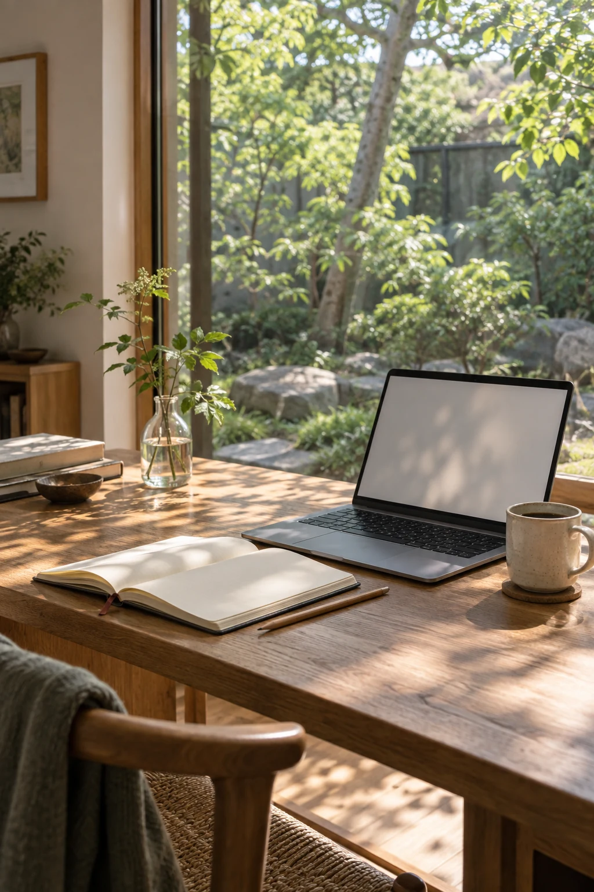
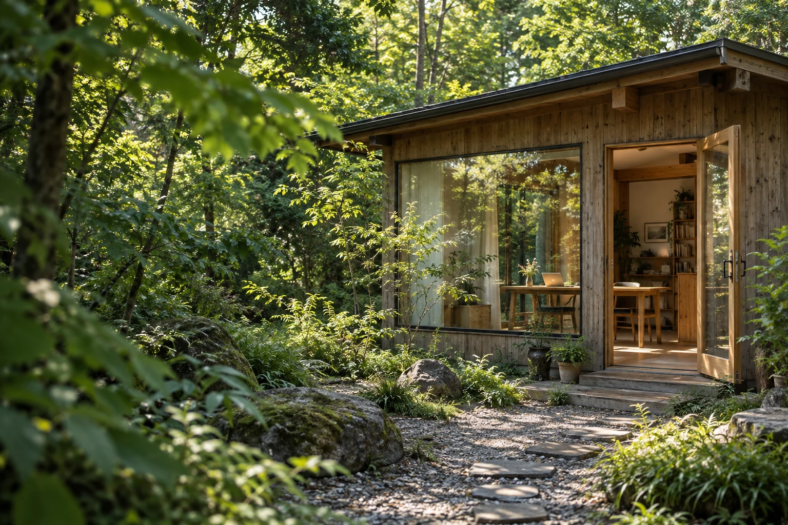

事業者・チームの方へ
AI現場伴走室
AI AT WORK
AI & SELF UNDERSTANDING
仕事にAIを取り入れること。自分の強みを知ること。
あなたの話を聞くところから、始めます。
01 AIの導入 / 02 強みの読み解き

TWO WAYS TO START
仕事にAIを取り入れたい。
自分の強みをもっと知りたい。
気になる入口から、のぞいてみてください。
事業者・チームの方へ
AI AT WORK
自分の強みを知りたい方へ
KNOW YOUR STRENGTHS
「診断を受けたけれど、そのままになっている」。資質の名前を覚えるだけでなく、自分の言葉で読み解くところへ。自己理解の入口を、身構えずに読めるページにしました。
ストレングス入門を見る セッションについてはこちら →
HELLO, I'M OKEMON
はじめまして。介護・障害福祉の現場に16年いた、おけもんです。介護職員、サービス管理責任者、施設長として働いてきました。
夜勤明けの記録も、管理者として抱える悩みも。その現場を知っているからこそ、使う人の言葉で、一緒に考えたいと思っています。
いまはAIの導入と、強みの読み解きを仕事にしています。このホームページも、AIと一緒に試しながらつくっています。
SELECTED WORKS
AIの活用を伝えるページから、
その人らしさが伝わるホームページまで。
